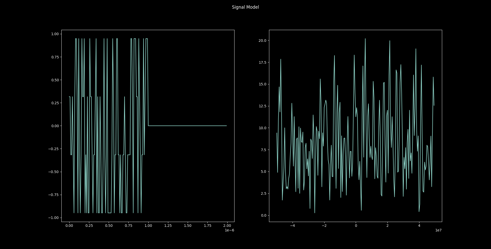

Library
This section outlines how to include HermesPy into your own Python projects and provides basic reference examples to get new users accustomed to the API.
In its core, the HermesPy API aims to abstract the process of wireless communication signal processing in an object-oriented class structure. Each processing step is represented by a dedicated class and can be adapted and customized by the library user. Considering a single link between a receiving and transmitting modem, the software architecture is outlined in the following flowchart:
Each HermesPy Scenario consists of multiple links between Transmitters and Receivers, which are both Modems. Transmitters feed Signal models of electromagnetic waves into a wireless transmission Channel. After propagation over said channel, receivers subsequently pick up the distorted signals.
Both transmitters and receivers perform a sequence of processing steps in order to exchange information represented by binary bit-streams:
BitsSource (transmitters only)
Generate a sequence of bits to be transmitted.Bit-Encoding
Perform operations on the bit-sequence to add redundancy and correct errors.Waveform-Generation
Map bits to communication symbols, modulate the symbols to electromagnetic baseband-signals.Radio-Frequency Chain
Mix and amplify the baseband-signals to radio-frequency-band signals.
Note that receivers perform the inverse processing steps in reverse order.
Getting Started
Assuming HermesPy is properly installed within the currently selected Python environment, users may define custom scenarios to be investigated.
This chapter provides several examples outlining the utilization of HermesPy as a library.
Transmissions
The following code generates the samples of a single communication frame transmitted by a PSK/QAM modem:
1import matplotlib.pyplot as plt
2from hermespy import Scenario, Transmitter
3from hermespy.modem import WaveformGeneratorPskQam
4
5transmitter = Transmitter()
6transmitter.waveform_generator = WaveformGeneratorPskQam()
7
8scenario = Scenario()
9scenario.add_transmitter(transmitter)
10
11signal, _ = transmitter.send()
12signal.plot()
13plt.show()
Within this snippet, multiple statements lead to the generation and simulation of a single communication frame signal.
Initially, the required Python modules are imported (lines 1-3).
A new transmitter modem handle is created (line 5).
The waveform to be generated by the transmitter is configured by assigning a specific Waveform Generator instance to the transmitter’s waveform_generator property (line 6).
In our case, this is an instance of a PKS/QAM waveform generator.The transmitter is inserted into an empty simulation scenario (lines 8-9)
An electromagnetic waveform, encoding a single communication frame, emitted by the transmitter is generated and plotted (lines 11-13)
Executing the snippet will result in a plot similar to

which visualizes the generated samples in time-domain (left sub-plot) and its respective discrete fourier transform (right sub-plot).
While this is only a minimal example, it highlights the philosophy behind the HermesPy API, namely that each signal processing step is represented by a class modeling its functionality. Instances of those classes are assigned to property slots, where they will be executed sequentially during signal simulation. Changing the waveform generated by the transmitter defined in the previous snippet is therefore as simple as assigning a different type of Waveform Generator to its waveform_generator property slot.
Of course, a multitude of parameters can be configured to customize the behaviour of each processing step. For instance, the frame generated by a PKS/QAM waveform generator features a preamble of multiple reference symbols at the beginning of the communication frame. They may be removed by specifying the respective property
transmitter.waveform_generator.num_preamble_symbols = 0
configuring the number of preamble symbols, resulting in a signal waveform similar to
in which the preamble has clearly been removed. Describing all configurable parameters is beyond the scope of this introduction, the API documentation of each processing step should be consulted for detailed descriptions.
A full communication link over an ideal channel between a single transmitter and receiver modem is established by adding receiver to the scenario:
1from hermespy import Scenario, Transmitter, Receiver
2from hermespy.modem import WaveformGeneratorPskQam
3
4transmitter = Transmitter()
5transmitter.waveform_generator = WaveformGeneratorPskQam()
6
7receiver = Receiver()
8receiver.waveform_generator = WaveformGeneratorPskQam()
9
10scenario = Scenario()
11scenario.add_transmitter(transmitter)
12scenario.add_receiver(receiver)
13
14transmitted_signal, _ = transmitter.send()
15propagated_signal, channel_state = scenario.channel(transmitter, receiver).propagate(transmitted_signal)
16
17received_signal = receiver.receive(propagated_signal)
18received_bits, received_symbols = receiver.demodulate(propagated_signal, channel_state)
The relevant sections in lines 14-15 highlight how a signal transmission over the channel between two modems is simulated by selecting the respective channel and propagating a waveform over it. As a result, a tuple of the waveform after propagation and its respective channel state information is returned. In lines 17-18 the propagated signal is down-mixed by the receiver’s radio-frequency chain and demodulated into symbols, and subsequently mapped to bits.
Simulations
Evaluating multiple transmissions in scenarios featuring several modems can become quite tedious, which is why HermesPy offers the Simulation helper class. Considering the same scenario as before, the following snippet demonstrates how a single communication drop at 40dB signal-to-noise ratio can be generated:
1import matplotlib.pyplot as plt
2from hermespy import Scenario, Transmitter, Receiver, Simulation
3from hermespy.modem import WaveformGeneratorPskQam
4
5transmitter = Transmitter()
6transmitter.waveform_generator = WaveformGeneratorPskQam()
7
8receiver = Receiver()
9receiver.waveform_generator = WaveformGeneratorPskQam()
10
11scenario = Scenario()
12scenario.add_transmitter(transmitter)
13scenario.add_receiver(receiver)
14
15simulation = Simulation()
16simulation.add_scenario(scenario)
17
18drop = simulation.drop(40.)
19drop.plot_received_symbols()
20drop.plot_bit_errors()
21
22plt.show()
Note that lines 5-16 are identical to the previous snippet, defining a scenario with a single receiver and transmitter modem emitting PKS/QAM waveforms. However, the scenario is now being managed by the Simulation helper. It generates and visualizes a single information exchange between all scenario modems (lines 18). In HermesPy, this is referred to as a Drop. Visualizing the received symbols (line 19) and bit errors (line 20) during transmission results in the following constellation and bit error plots:

Symbol Constellation, Low Noise |

Bit Errors, Low Noise |
Of course, due to the high signal-to-noise ratio and the ideal channel model, no bit errors occur during transmission. Generating another drop at a much lower ratio, namely 5dB,
drop = simulation.drop(5.)
leads to several bit-errors during data transmission:

Symbol Constellation, High Noise |

Bit Errors, High Noise |